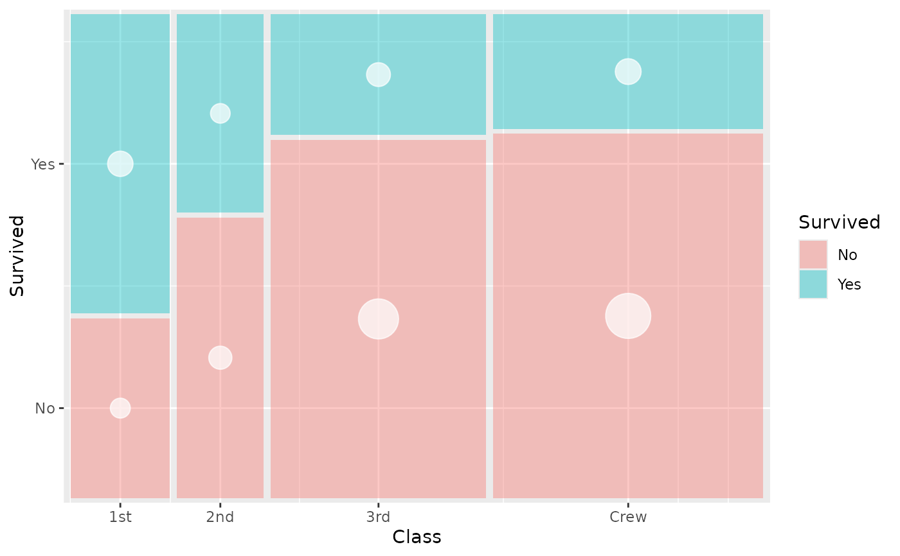
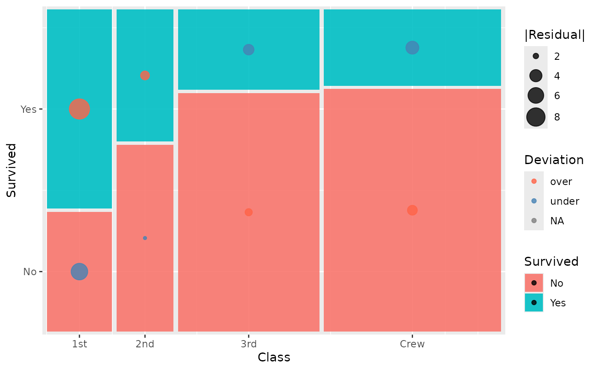

Retrieve computed tile positions from a marimekko layer
StatMarimekkoTiles.RdRetrieve computed tile positions from a marimekko layer
Usage with custom geoms
Use StatMarimekkoTiles as the stat argument in ggplot2::layer()
to pair the tile data with any geom. The only requirement is that
geom_marimekko() must appear before the custom layer so that
tile positions are computed first.
Examples
library(ggplot2)
titanic <- as.data.frame(Titanic)
# Bubble overlay — point size encodes tile count
ggplot(titanic) +
geom_marimekko(
aes(fill = Survived, weight = Freq),
formula = ~ Class | Survived, alpha = 0.4
) +
layer(
stat = StatMarimekkoTiles,
geom = GeomPoint,
mapping = aes(size = after_stat(weight)),
data = titanic,
position = "identity",
show.legend = FALSE,
inherit.aes = FALSE,
params = list(colour = "white", alpha = 0.7)
) +
scale_size_area(max_size = 12)

# Residual markers — colour and size show deviation from independence
ggplot(titanic) +
geom_marimekko(
aes(fill = Survived, weight = Freq),
formula = ~ Class | Survived
) +
layer(
stat = StatMarimekkoTiles,
geom = GeomPoint,
mapping = aes(
size = after_stat(abs(.residuals)),
colour = after_stat(ifelse(.residuals > 0, "over", "under"))
),
data = titanic,
position = "identity",
show.legend = TRUE,
inherit.aes = FALSE,
params = list(alpha = 0.8)
) +
scale_colour_manual(
values = c(over = "tomato", under = "steelblue"),
name = "Deviation"
) +
scale_size_continuous(range = c(1, 8), name = "|Residual|")
